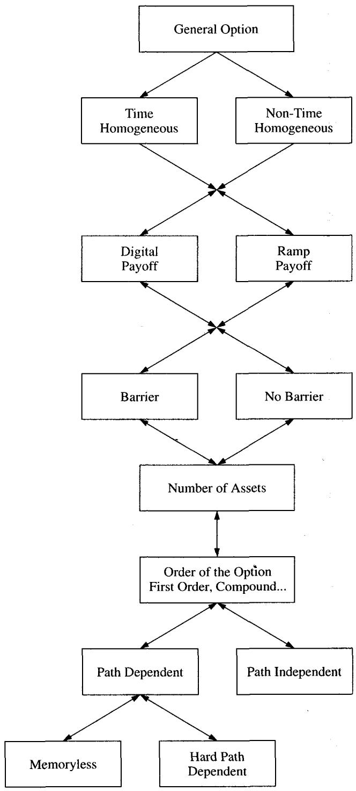
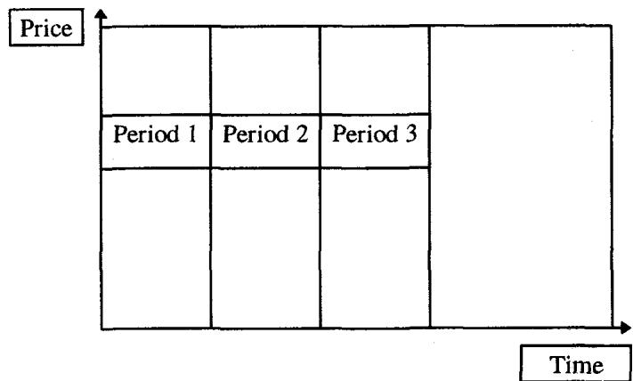
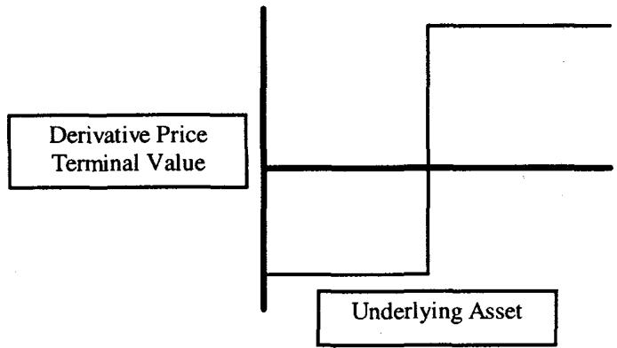
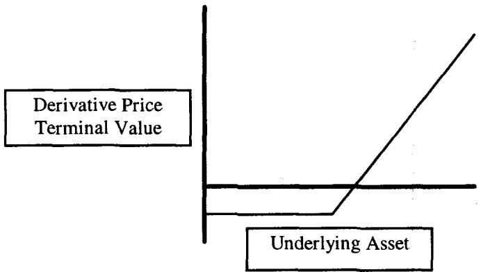
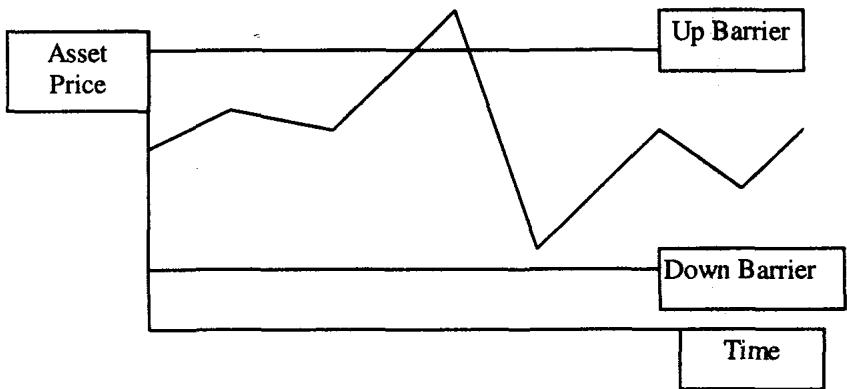
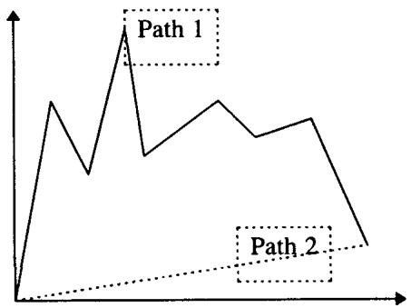

第二章：广义期权（The Generalized Option）
A drunk man will find his way home. A drunk bird may get lost forever. —— Kakutani
导读：本章要解决的问题
第一章把衍生品按线性与非线性切开，并用污染原理给出了"曲率从哪里来"的物理直觉。第二章接着回答一个更具操作性的问题：当一张陌生的合约摆在交易台上，应该沿哪几个维度把它拆开，才能判断它真正的风险长什么样？ Taleb 给出的答案是一个六维分析框架（见图 2.1），任何期权，无论被市场叫作 vanilla 还是 exotic，都可以放进这六个问题里逐一回答。
开篇 Taleb 先消解了 vanilla 与 exotic 的二分。CBOE 在 1978 年引入看跌期权时，put 被当成 exotic、call 才是 vanilla；今天看这种划分只是流动性和定价习惯的产物。两类产品之间没有真正的功能性差异，exotic 的"难"通常只难在定价稍微复杂，而非风险机理上有什么全新的东西。于是真正有用的不是给产品贴 vanilla/exotic 的标签，而是沿六个维度做结构化的提问。
把全章压缩成六个问句，它们就是本章的骨架：
- 这张合约的支付结构是否随时间改变（时间齐次性）？
- 它的支付是连续的（ramp）还是离散的（digital）？
- 结构里有没有触碰即改变支付的障碍（barrier）？
- 它涉及几个状态变量（维度与标的数）？
- 它是几阶期权（是否期权写在期权之上）？
- 它是否路径依赖，依赖到什么程度？
题记里的醉汉与醉鸟值得多说一句，因为它正是第四维"维度"的隐喻。二维随机游走是常返的（recurrent），醉汉在 Madison 大道上迟早会走回家；三维随机游走是暂态的（transient），醉鸟以正概率永远飞不回原点。这就是 Pólya 常返性定理：随机游走的回归行为在 与 之间发生质变。Taleb 把它放在章首，是提醒读者，维度不是一个可以线性外推的参数，从二维跨到三维，问题的性质会突变。下面沿原文的六步顺序展开，并在每一步补全它对应的理论命题。

图 2.1 是本章的总图：把一张期权放在六个坐标轴上定位，每个轴回答一个风险问题。读这张图的方式是把它当成一份诊断清单，而非一棵分类树。
一、第一维：结构的时间齐次性（Homogeneity of the Structure）
时间齐次（time-homogeneous）的结构，指支付函数在合约存续期内不随时间发生契约性的改变，从签约到到期对时间保持一致。第一个该问的问题就是：这张合约的支付特征会不会在某个日期前后发生跳变？
Taleb 的例子是延迟设定行权价的期权（deferred strike option）。这种期权的行权价不在签约时确定，而是在未来某个观察日由当时的现货价定下来。它的风险画像因此被切成两段：在 strike 设定之前，期权在账面上既没有 delta 也没有 gamma（因为还不知道相对哪个价位计算 moneyness），却已经有 vega，因为未来的波动率会影响最终设定下来的行权价附近的价值；strike 一旦设定，它就退化成一只普通的香草期权。合约因此天然定义了两个时期：Period 1 是"无 gamma"期，Period 2 是香草期。
这个例子点出一件容易被忽视的事：希腊字母本身是分段定义的。一只在 Period 1 没有 delta、没有 gamma 却有 vega 的期权，提醒我们不能用单一一组 BSM 偏导去描述整条生命周期。从理论侧看，延迟设定行权价对应的是一个 forward-start option，它的价值在设定前由波动率的远期结构（forward volatility）驱动，标的水平本身通过 scale invariance 被消掉，所以 delta 为零、vega 不为零。这是后面处理时间非齐次希腊字母的第一个铺垫。

图 2.2 把到期前的时间轴切成若干段，每一段对应自己的支付规则。窗口期权（window option）就是这样一种结构：障碍只在某段时间内有效，过了窗口障碍就消失。可变障碍期权（flexible barrier）更进一步，障碍逐月平移，第一个月在 109（现货 100），第二个月升到 110，第三个月 111，依此类推。时间非齐次的结构往往最难管理，因为支付规则本身在动，定价模型必须显式地把"现在处于哪一段"编码进去。
Taleb 在这里顺手补了一句很有交易台气质的观察：quant 觉得难的和交易员觉得难的，常常不是同一批期权。 美式期权对定价数学来说几乎是琐碎的（一个自由边界问题，数值上早已成熟），交易员却要为提前行权的现金流和替换风险操心；数字期权和 bet 在数学上简单到几乎是一个示性函数的期望，交易员却因为它在障碍附近的 delta 爆炸而极难对冲。定价的难度和对冲的难度是两个正交的维度，这条认识贯穿全书。
理论映射：时间齐次性与 PDE 系数的时间依赖
时间齐次在数学上对应定价 PDE 的系数与边界条件不显含时间分段。一只香草欧式期权满足的 BSM 方程
在整个 上用同一组系数、同一个终值条件求解。时间非齐次结构则要把 切成若干子区间，每段有各自的方程或边界（窗口期权在窗口内才加障碍吸收边界，窗口外退化为自由扩散）。求解时只能从终值往回，逐段拼接、在切片处做连续性匹配。这正是图 2.2"切片"的数学含义：值函数在时间上分段定义，靠区间衔接条件粘合。
Option Wizard：结构的最小可分解片段（SDF）
这是本章在风险管理上最实用的一个工具。Taleb 提出，任何结构出于风险管理目的都应当被拆解成更小的单元，直到无法再拆为止。这个无法再拆的单元就是最小可分解片段（smallest decomposable fragment, SDF）。这里"可分解"的精确含义是：能写成若干结构相加。一张结构能不能拆，等价于问它的支付能不能表示为更简单支付的线性叠加。
Taleb 列了一串判例，值得逐条记住，因为它们就是"哪些能拆、哪些不能拆"的标准答案：
- 双障碍期权不是两个单障碍期权之和，不可分解。
- 宽跨式（strangle）是一个 put 加一个 call，可分解。
- 欧式 double bet 可拆成两个欧式 single bet；美式的 "either-or" double bet 不可分解。
- 篮子期权不能拆成对成分股的若干小期权；价差期权同理，不能拆成对两条腿各自的期权。
- Cap / floor 可以拆成一串 caplet / floorlet；但 swaption（写在互换上的期权）不可分解，它的性质类似篮子期权。
- 欧式障碍期权本书不展开，因为它就是一个数字期权加一个 call spread 的简单相加。
- 有些期权是极限可分解（limit decomposable）：能拆，但要拆成无穷多份或无穷窄的 strike 对。回望期权可分解为一系列行权价无限接近的敲入敲出期权；二元 call 可分解为无穷多个无穷窄的 call spread，虽然没人真去这样复制，但这个认识在交易和定价里很有用。
这串判例背后有一条清晰的代数原则：可分解 = 支付函数可加；不可分解 = 支付里含有不可加的交互项。 strangle 可加，是因为 就是两段独立支付之和。双障碍不可加，是因为"两个障碍都没被触碰"这个事件不是两个单障碍生存事件的简单叠加，它们在路径层面相互纠缠。篮子和价差不可分解，根因是 无法写成 ，凸的多元支付函数不可加性正是相关性进入定价的入口。极限可分解则对应一个分布意义下的恒等式：二元 call 是 call 价格对行权价的导数
这正是"无穷窄 call spread"的连续版本，也是后面用 vanilla 复制数字期权、读出风险中性密度的基础（Breeden-Litzenberger）。
Taleb 在 SDF 之后加了一句关键提醒，呼应第一章末尾的话：对一个考虑交易成本的动态对冲者，组合里若干 SDF 加总后的收益，与各 SDF 独立管理后收益之和，会有显著差别。 也就是说，分解是为了识别风险构件，但对冲时不能天真地把每个片段单独对冲再相加，交易成本和相互对冲带来的净额效应会让"组合管理"优于"逐片管理"。SDF 是分析工具，不是对冲执行的处方。
二、第二维：支付的类型，连续与离散（Continuous and Discontinuous Payoffs）
第二个维度是支付函数的形态。Taleb 把它二分为斜坡支付（ramp，连续）和数字支付（digital，离散）。ramp 在各点之间连续变化，香草期权的 就是典型；digital 是"全有或全无"，中间没有过渡，本质上就是两个人对某个事件结果的对赌。

图 2.3：数字支付在触发点处垂直跳变，事件成立拿固定金额，不成立拿零。

图 2.4：斜坡支付随标的连续变化，这是香草期权的形态。
Taleb 用一个赌注的例子讲清楚离散支付：有人就一桩广受关注的谋杀审判结果下注 1000 美元（交易员确实常干这种事），结果只有两种，输掉 1000 或赢得 1000，中间没有任何过渡值，这就是不连续支付。
处理离散支付期权时有一组好消息和坏消息：
第一，坏消息是市场上几乎所有可用的对冲工具都是连续支付产品，用连续的东西去对冲一个离散的支付，必然得到不完美或不稳定的对冲。理论上存在精确对冲（比如用垂直价差去逼近那个跳变），但这种构造执行成本太高，现实中通常也买不到足够窄的价差。
第二，好消息是 bet 期权"咬得不深"（small bite）：只要按它本来的样子去交易，把它当成一个赌注来持有，它对交易者其实是相对无害的。对这类产品应当避免动态对冲。 这是一条很反直觉但极重要的实务规则：不是所有期权都该动态对冲，对一个名义金额有限、按赌注定价的离散支付，硬要去 delta 对冲反而会在障碍附近被 gamma 撕裂，最优策略是把它当赌注持有，用分散和限额而非再平衡来管理。
理论映射：离散支付为何对冲不了，狄拉克 delta 与无界 gamma
数字期权对冲之难，根子在它的希腊字母在触发点附近发散。一个到期支付为示性函数 的现金或无价数字 call，其价值在 BSM 下是 。它的 delta 正比于 ，gamma 则随到期临近而趋于无穷：当 且 时，支付函数趋于一个阶跃，delta 趋于狄拉克 函数，gamma 在 两侧符号相反且无界。
连续支付工具的 delta 是有界、平滑的函数，用有界的东西去复制一个 函数，复制误差不可能收敛，这就是"几乎所有对冲都是连续支付，因而对离散支付无能为力"的数学表述。垂直价差之所以能精确对冲，是因为宽度 的 call spread 除以 在极限下正好给出数字支付（上一节的 ），但 时所需的期权数量 ，成本随之爆炸。这就把 Taleb 的"成本太高、买不到"翻译成了一个极限发散。Taleb 的结论"别动态对冲、当赌注持有"在理论上完全自洽：当复制成本发散时，承担有限的离散风险比追逐发散的对冲成本更优。
离散支付通向障碍：两个票据例子
Taleb 用两个挂钩美元日元的票据演示离散支付如何嵌入真实结构，也借此过渡到第三维障碍。
欧式例子：一张三年期美元计价票据，每个付息日只要美元日元在 100 之上就付 7% 的票息，否则付 4%。这张票据可以拆成一张同期限的普通票据，加上一串行权价 100、在各付息日到期的数字 call。注意它的离散性体现在"到期日那一刻在不在 100 之上"，是一个 European bet 的条带。
美式例子：同样的票据，改成付 8%，但只要日元在三年存续期内任何时点触及 110，这个条件就被破坏。这里的"任何时点触及"把欧式的到期判定变成了美式的路径判定，支付不再只看到期那一刻，而是看整条路径有没有碰过 110。这一字之差，正是从 bet 走向 barrier 的关键。

图 2.5：资产价格向上穿越障碍的过程。美式 bet 的"if touched"判定，意味着风险来自首次触碰时刻（first passage time），而非终值。
三、第三维：障碍（Barriers）
障碍是市场里的一个价格水平（称为触发价 trigger），一旦被触及，就显著改变整个结构的支付。Taleb 说这是期权交易里最刺激的部分，许多交易员都曾屏息看着触发价被穿越；它对研究者也很有趣，因为它牵出概率论里一支很有色彩的分支。
要问的核心问题是：这个障碍是终止结构（knock-out，敲出）还是启动结构（knock-in，敲入）？术语上，高障碍（up barrier）位于当前现货之上，低障碍（down barrier）位于现货之下。
障碍是本章六维里风险最尖锐的一维，因为它把离散支付的所有麻烦集中到了一个价格点上，而且这个点还可能在期权深度实值、delta 很大时被触及。Taleb 在本章只做定性铺垫，把详细的风险机理留给第 19、20 章，但这里已经能看出它和前两维的连接：障碍本质是一个路径触发的离散事件，所以它同时继承了"离散支付难对冲"（第二维）和"路径依赖"（第六维）两重困难。
理论映射：障碍对应首次穿越时间与吸收边界
障碍期权的定价核心是首次穿越时间（first passage time） 的分布。敲出期权的价值是终值支付在"未触碰障碍"事件上的条件期望
在 PDE 视角下，这等价于在 BSM 方程上加一个吸收边界条件 ，把求解区域限制在障碍的一侧。对几何布朗运动，首次穿越概率可以用反射原理（reflection principle）求出闭式解，连续监测障碍下的标准障碍期权因此有解析价格。障碍附近 delta 与 gamma 的剧烈行为，正是吸收边界把值函数"压"到 rebate 水平时产生的陡峭梯度，这就是为什么障碍期权在 trigger 附近最危险，也是 Taleb 说它"call on a colorful branch of mathematics"的所指。
四、第四维：结构的维度与标的数量（Dimension and Number of Assets）
Taleb 给维度一个精确定义：结构的维度 = 1 + 影响其价值的变量个数，那个 1 留给时间。模块 A 里的随机游走教程会说明，常规香草期权是二维的，一个轴是资产价格，一个轴是时间，整个市场可以画成醉汉沿 Madison 大道的经典随机游走。一旦不止一个变量进入结构，交易员就必须面对相关性（correlation）与独立性（independence）。
高维结构有好几种。"硬"三维结构里有不止一个行权价；"软"三维结构（比如可转债）里，利率水平本身进入了结构的构造。美式货币期权对利率和利率曲线特别敏感，因此也被当成更高维的结构。这里"硬/软"的区分延续了第一章的用法：硬维度来自合约显式写明的多个状态变量，软维度来自定价构造中隐含进来的额外变量。
对冲会自己制造维度
本节最深刻的一个论断是：衍生品交易员习惯用流动工具对冲自己，这个习惯会让所有工具都变成多资产的（构造上就升了维）。 当一个非流动市场里的期权被一个"相似的"流动市场期权对冲时，那个"相似"本身就成了风险。Taleb 把它单列为一类结构：
构造上的多资产结构，是指用流动期权去对冲一个非流动结构所产生的结构。
这是一条很反直觉、却极其重要的认识。维度不只是合约写出来的，它会因为你的对冲动作而内生地增加。你以为自己持有一个一维敞口，一旦用一个高度相关但不完全相同的工具去对冲，组合立刻变成依赖两个标的加它们之间相关性的多维结构。
构造性多资产三维例子：某银行交易员卖给客户一个 DEM-AUD（德国马克兑澳元）交叉期权（"oh no!"）。这个期权显然可以用标的（DEM-AUD 的现货与远期）对冲，问题是那个国家的现货市场流动性不好。于是交易员把结构拆成两段：USD-DEM 和 AUD-USD，在这两个流动市场里对冲现货和远期敞口，先做到一阶（delta）中性。聪明的交易员还要进一步对冲组合的波动率风险，于是分别在 USD-DEM 和 AUD-USD 里买入一些波动率（这两个都流动）。现在他持有的是一个多资产组合，盯着 USD-DEM 和 AUD-USD 两个价格，而原先只需盯一个。Taleb 点出关键：这两个不同资产会产生三个波动率（每个货币对一个，再加上交叉对自身），由两个相关性绑在一起。
这个例子把"对冲制造维度"讲得非常具体：原本一个 DEM-AUD 期权（看似二维），为了对冲被拆进两个流动货币对，结果组合的波动率风险变成三个 vol、两个 correlation 的纠缠。模块 C 会讲清两个货币之间、或货币与计价基准货币之间的排序含义，这里先记住结论。
设计性多资产四维例子：上例那位交易员接到一个坏消息电话，结果不得不交易一个希腊德拉克马兑澳元（GDR-AUD）的大额期权头寸。他把波动率风险拆成流动子构件：GDR-DEM、USD-DEM、AUD-USD，逐个对冲。三个资产加时间，就是四维。
理论映射：相关性进入定价，与多维 PDE
多资产期权的价值满足多维 BSM 方程，相关性以协方差项进入二阶部分。两资产情形下
那个交叉项 就是相关性的定价入口，也是 cross gamma（对两个标的的混合二阶导）。当交易员用 USD-DEM 和 AUD-USD 复制 DEM-AUD 时，三角关系给出 ，这正是模块 D 的相关性三角。对冲制造维度在数学上就是：把一个标的的波动率拆成两个标的的波动率加一个相关性，原来的一维扩散被嵌入了一个带交叉项的二维扩散。相关性一旦不稳定，cross gamma 的对冲就会失效，这是后面所有多资产期权风险的总根源。
回到章首的醉汉与醉鸟：二维随机游走常返、三维暂态，意味着从二维香草期权升到三维多资产结构，不是参数多了一个那么简单，而是问题的拓扑性质发生了改变。常返性的丧失正对应高维对冲里"再平衡未必能把你带回中性"的实务困境。
Option Wizard：对冲如何把你拖进麻烦
Taleb 专门写了一段警示。金融市场史上满是这样的故事：交易员买入一个工具，再卖出一个"高度相关"的工具去对冲，结果发现风险不降反增，翻了一倍。当他在屏幕上看到自己多头的那个工具下跌、空头的那个工具上涨（当然，总是这么巧），他会埋怨市场不守规矩。
更深的分析会揭示：那些容易买、又容易找到"相关兄弟"来卖的工具，恰恰是麻烦的邀请函。 它们像陷阱，吸引大量对冲者和套利者涌入，再迫使他们在流动性枯竭时狼狈平仓，制造出剧烈的噪声式清算。Taleb 顺手又点了 value at risk 一刀：轻信这种"相关性对冲"的天真管理者，用 VaR 这类工具时会得到灾难性的结果，因为 VaR 假设的相关性恰恰在压力时刻最不可靠。
互换与债券的例子：互换本来是容易交易的工具，麻烦在于确切的到期和票息从来不像操作者希望的那样流动。于是这些互换只能用票息不同、各自独立交易的别的互换去匹配；而当用 strip（按权重加总的 Eurodollar 期货）去对冲时，互换就对各成分之间的相关性变得敏感。又一次，对冲动作把一个看似干净的工具变成了相关性敏感的多资产头寸。
这一段的实务训诫可以提炼成一句：相关性不是用来降低风险的免费工具，它本身是一个会移动、会在最坏时刻背叛你的风险维度。 第一章说流动性是隐形风险，这里 Taleb 补上第二个隐形风险，相关性，二者往往在压力场景里同时现身、相互放大。
五、第五维：期权的阶数（Order of the Options）
高阶期权指或有的或有，也就是期权写在期权之上。写在另一个期权上的期权是二阶期权，写在二阶期权上的是三阶期权，依此类推。这类复合结构在金融产品里越来越常见。许多所谓可展期期权（extendible）内嵌了按约定价格续约的权利：可以续约比如五次，每次预付 1 元；但只要在任一展期点不续约，整个结构要么作废，要么按行权价交割标的，像一次普通交割。
随着阶数升高，交易员面对的是或有性之上的或有性。头寸会越来越移向虚值，风险越来越非线性。一个概率与一个二阶期权复合在一起，会降低支付的确定性，因此需要的对冲比普通期权更少；delta 会更低，但极不稳定，不稳定到几乎不能提供有意义的风险披露。一阶希腊字母变得意义有限，它们的不稳定迫使风险经理转向更高阶的导数，比如三阶矩和四阶矩，来评估组合风险。
例子：复合期权一个常见用途是认股权证（warrant）发行。权证价格在某一刻定下来，比如定在 2 元，但投资者有几个小时或几天来决定要不要买入。期权交易商因此是"一个写在权证上的期权"的空头，他 short 了一个 option on warrant。
理论映射：复合期权与高阶矩
复合期权（compound option）的价值是一个嵌套期望。一个写在 call 上的 call，其到期支付是 ，而 本身又是后续标的路径的期望。Geske 给出过闭式解，需要用到二元正态分布，因为最终行权概率耦合了两个时点的状态。Taleb 强调的"delta 低且极不稳定"在理论上有清楚来源：复合期权对标的的一阶敏感度被两层 moneyness 概率连乘压低，但它的高阶导数（对标的的三阶、四阶导，以及对波动率的二阶导 volga）被放大。
当 delta、gamma 这些低阶量失去意义时，用矩去刻画风险成为必要。组合 P/L 的分布偏离正态越远，三阶矩（skewness）和四阶矩（kurtosis）携带的信息越多。复合期权把支付推向深度虚值的尾部，正是制造高 kurtosis 的结构，所以 Taleb 说要诉诸三阶、四阶矩。这条线索一直延伸到第 21 章对 compound、chooser 这类高阶期权的处理，也呼应模块 E 里 value at risk 在厚尾下失真的讨论：当风险集中在尾部，看方差和 delta 就是看错了地方。
六、第六维：路径依赖（Path Dependence）
最后一维是路径依赖。路径无关（path-independent）期权的支付只取决于到期时的状态，与如何走到那里无关；路径依赖（path-dependent）期权除了终值，还至少依赖路径上的某一个价格。
欧式期权对买方而言只依赖终值：买了 104 call，到期若标的在 104 之上就获益，否则损失权利金，现货怎么走到那里理论上无关，所以它是路径无关的。但 Taleb 立刻拆穿：这种路径无关是个神话。 对任何持有按市值计价头寸、并在存续期内拥有决策权的人，包括终端用户在内，每一个证券都是路径依赖的。原因在于盯市损益和中途决策权：哪怕终值相同，中途的浮亏可能触发保证金追缴、止损、心理崩溃或被迫平仓，于是路径通过"人会在中途做决定"这件事重新进入了损益。

图 2.6：两条不同的路径到达同一个终值点。对一个理论上的欧式买方，这两条路无差别；对一个有盯市、有决策权的真实持有者，两条路的体验和结果可能天差地别。
软路径依赖与硬路径依赖
Taleb 把路径依赖再分两类：
软路径依赖（soft, "memoryless") 只依赖路径上的一条信息。障碍期权是软路径依赖，因为它在任何时刻只关心一件事：资产有没有在障碍处或穿过障碍。回望期权（lookback）也是软路径依赖，它只依赖路径上的极值（extremum），至于是经过怎样的次序到达那个极值的，无关紧要。回望与障碍因此有亲缘关系，回望可以分解成一系列敲入敲出期权（呼应第一节的极限可分解）。
硬路径依赖（hard, "path-dependent with strong memory") 的支付完全依赖某段区间内走过的整条路径。均值期权（options on averages，即亚式期权）是硬路径依赖：每一次观测都计入，价值依赖证券走的每一步，所以是真正的路径依赖，因为通往罗马的每一条路走法都不一样。
不过密度（density）决定记忆有多强、什么才算路径依赖。密集采样的路径依赖期权在乎每一条信息，稀疏的只在乎偶尔的几条。例子：一个基于每小时价格的亚式期权呈现密集路径依赖特征，按月度或季度采样的则是轻度路径依赖。采样密度对最终对冲的影响留待后文。
理论映射：路径依赖与状态变量增广
路径依赖在数学上对应需要增广状态空间才能恢复马尔可夫性。一只路径无关期权的值函数是 ，两个变量就够；一只硬路径依赖的亚式期权，值函数要写成 ，其中 是running average，是一个额外的状态变量。
正是这个增广把亚式期权从二维 PDE 推到三维 PDE，也把它归进第四维"高维结构"，路径依赖和维度在这里交汇。软路径依赖之所以"软"，是因为它只需增广一个简单的统计量：障碍只需记录一个布尔量（是否已触碰），回望只需记录一个极值 。这些都是低维充分统计量，故称 memoryless 或弱记忆。硬路径依赖（如算术平均亚式）需要的统计量本身在演化，记忆更"重"。采样密度的作用也清楚：离散采样下增广变量只在采样点跳变，连续采样下它连续演化，密集采样逼近连续情形，对冲所需的再平衡也更频繁。
把这一维和"路径无关是神话"那句合起来看，Taleb 的真正主张是：对动态对冲者而言，路径依赖不是奇异期权的专利，而是一切持仓的普遍属性。 盯市、保证金、决策权，把每一个头寸都变成了对自身价格路径敏感的结构。这是全书"动态"二字的又一层注脚。
七、本章综述：理论与实务的对照
第二章给出的是一套诊断流程，而非一份产品目录。它的价值在于把"这张陌生合约该怎么看"变成六个可以依次回答的问题，每个问题都既有交易含义，也有对应的理论命题。下表把六维和它们的数学身份对齐。
| Taleb 的实务命题（六维） | 对应的理论命题 |
|---|---|
| 时间齐次性：支付是否随时间分段改变 | PDE 系数与边界是否分段；forward-start 期权的 delta=0、vega≠0 |
| SDF：可分解 = 支付可加 | 支付函数线性叠加；不可加项即相关性/路径耦合入口 |
| 极限可分解（二元 call、回望） | ；Breeden-Litzenberger 密度 |
| 连续 vs 离散支付 | 离散支付的导数含狄拉克 ，gamma 无界，复制成本 发散 |
| 障碍：knock-in / knock-out | 首次穿越时间分布；BSM 加吸收边界；反射原理 |
| 维度 = 1 + 变量数 | 多维 BSM；相关性进入交叉项 |
| 对冲会内生制造维度 | 相关性三角 ；cross gamma |
| 醉汉回家、醉鸟迷路 | Pólya 常返性： 常返， 暂态 |
| 高阶期权：delta 低且不稳 | 复合期权嵌套期望（Geske）；风险移入三阶、四阶矩 |
| 路径依赖（软/硬） | 状态空间增广恢复马尔可夫性：、 |
| "路径无关是神话" | 盯市 + 决策权使持仓对路径敏感，停时进入实际损益 |
核心观点
第一，vanilla 与 exotic 的界线是流动性和定价习惯画出来的，不是风险机理画出来的。1978 年的 put 是 exotic、call 是 vanilla，这段历史本身就说明标签会变。该问的不是"它是不是奇异期权"，而是它在六个维度上各落在哪里。
第二，定价的难度与对冲的难度正交。quant 觉得难的（bet、digital）交易员可能觉得好定价，交易员觉得难的（美式、障碍）quant 可能觉得平凡。判断一张结构的真实风险，要同时问"它好不好算"和"它好不好对冲"，这是两个独立的坐标。
第三，分解是为了识别风险，不是为了拆开对冲。SDF 帮你看清构件，但考虑交易成本后，组合管理的收益不等于各片段独立管理之和。能不能分解的判据是支付能不能相加；不可加性（双障碍、篮子、swaption）正是相关性和路径耦合藏身之处。
第四，维度会因对冲而内生增长，相关性是隐形风险。用流动工具对冲非流动结构，会把单资产敞口变成多资产加相关性的纠缠。"容易买、又容易找到相关兄弟来卖"的组合最危险，它在压力下会同时遭遇相关性崩坏和流动性枯竭，VaR 这类工具恰在此时失真。
第五，风险越往高阶和尾部走，低阶希腊字母越没用。高阶期权的 delta 低且极不稳定，必须诉诸三阶、四阶矩。这与模块 E 对厚尾下 VaR 的批评是同一件事的两种说法。
第六，路径依赖是一切持仓的普遍属性。盯市和中途决策权让"路径无关"成为神话。软/硬路径依赖的区别，落到数学上就是恢复马尔可夫性需要增广几个、多复杂的状态变量。
面对一张新结构的操作清单
读完本章，遇到任意陌生合约，可以按六维依次盘问：
- 支付结构会不会在某些日期前后改变？我需要把生命周期切成几段、每段的希腊字母分别是什么？
- 它的支付是连续斜坡还是离散跳变？如果有离散成分，是不是该当赌注持有而非动态对冲？
- 有没有障碍？是敲入还是敲出？触发价在现货之上还是之下？它在深度实值时会不会被触及？
- 它依赖几个状态变量？我打算用什么工具对冲，这个对冲会不会把它变成多资产加相关性的结构？
- 它是几阶期权？delta 还可信吗，还是我得直接看高阶矩？
- 它路径依赖吗？是软（只看一个极值/触碰）还是硬（看整段平均）？采样多密？
- 把上面拆出的构件还原成 SDF 后，哪些能用流动 vanilla 复制，哪些残余风险根本无法可靠对冲？
一句话收束
本章最该记住的一句：别问它叫 vanilla 还是 exotic，沿六个维度去拆它——时间齐次性、连续还是离散、有没有障碍、几个标的、几阶、路径依赖到什么程度——拆完你就知道风险藏在哪一维，以及你的对冲会不会自己再制造出一维来。